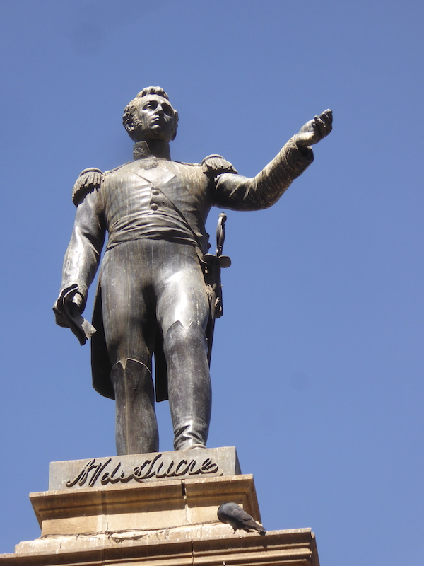
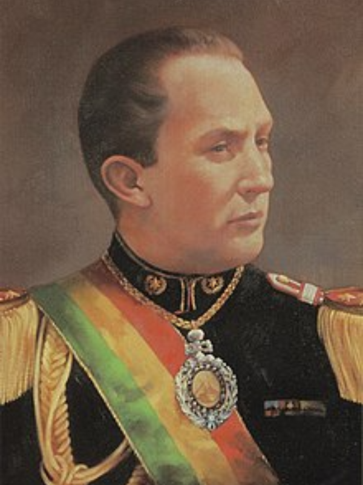
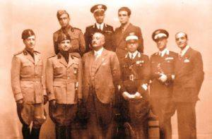
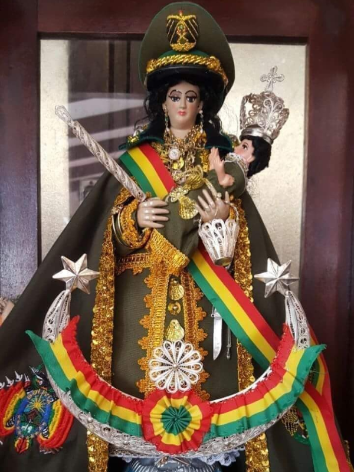
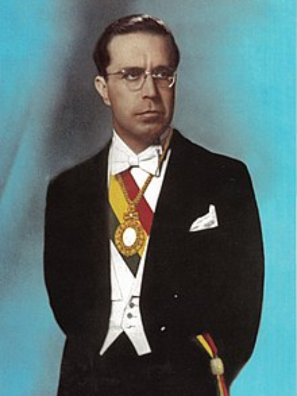
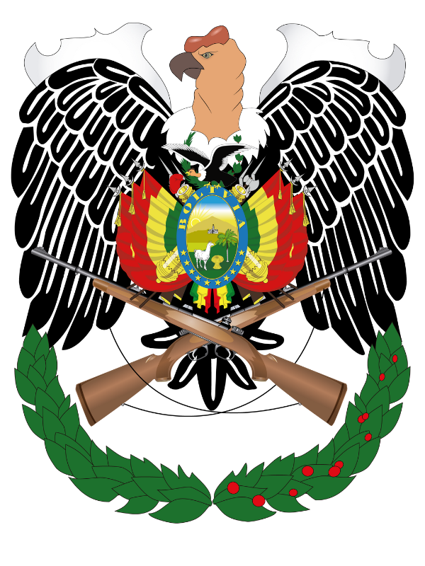
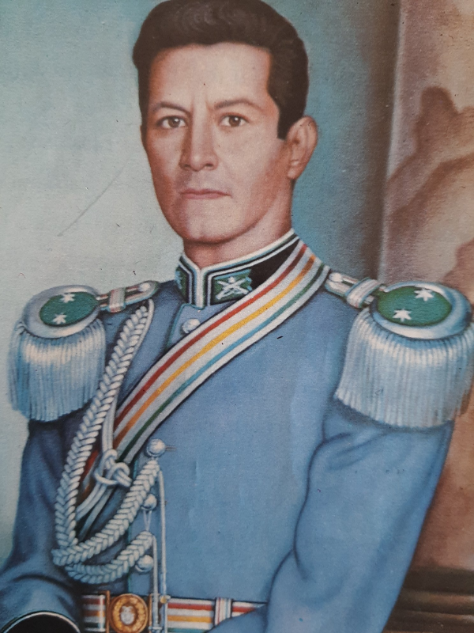
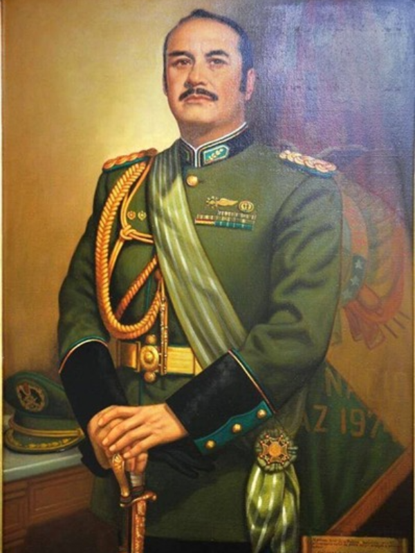

Reseña Histórica de la Policía Boliviana
Como primer referente después de la creación de la entonces República de Bolivia tenemos el proyecto de Constitución realizado por el Libertador Simón Bolívar, al constituir las primeras instituciones republicanas, entre las que se encontraba una Milicia para la conservación del orden interno.

Posteriormente, el 24 de junio de 1826, se instituyó la Ley Reglamentaria de la Policía con 2 capítulos y 40 artículos, firmada por el Mcal. Antonio José de Sucre, hecho que dio lugar a la creación de la institución de orden, la cual se consolidó el 6 de noviembre de 1826 con la primera Constitución Política del Estado.
El año 1861, la función policial como tal estaba dividida en dos servicios: el primero bajo órdenes de un Intendente de Policía y el segundo bajo el mando de un Comisario.
El 5 de abril de 1875, en la ciudad de Antofagasta, las autoridades y el pueblo en general resuelven en un cabildo la creación de un Cuerpo de Bomberos.
El 14 de febrero de 1879, se recuerda la defensa de las costas del Litoral boliviano con 40 gendarmes de sable, la muerte de los Sargentos de Policía Salvatierra y Flores, los cuales junto a 134 héroes defendieron Calama; la actitud heroica de la niña Genoveva Ríos, hija del Comisario de Policía Clemente Ríos, la cual rescató la tricolor nacional del mástil de la Intendencia en plena invasión y la remembranza del Capitán de Puerto Exequiel Apodaca, quien formó parte de la 5ta División del Ejército en la batalla de Canchas Blancas el 12 de noviembre de 1879.
El 28 de julio de 1930, el gobierno de turno instruye la unificación de las unidades policiales al mando de la Dirección General de la Policía y Carabineros.
El 16 de julio de 1932, en el gobierno de Daniel Salamanca, se instruye la movilización del Regimiento de Carabineros Calama al sector de Laguna Chuquisaca en la campaña del Chaco, además de otros destacamentos como los Regimientos 15 y 16 de Infantería conformados por gendarmes, comisarios y agentes de policía al mando de los Tcnls. Aguirre y Babia, participando en las batallas de Boquerón y Kilómetro 7, además del Regimiento Murguía conformado por los carabineros más aguerridos conocidos como los “cuchilleros de la muerte”.

El 26 de febrero de 1937, el presidente David Toro Ruilova firma el Decreto Supremo de creación de la Escuela Nacional de Policías y Carabineros de Bolivia, hoy Academia Nacional de Policías (Facultad de Ciencias Policiales), con la finalidad de profesionalizar a los servidores públicos policiales. La misma inició sus labores en el Cuartel Policial de la calle Calama (hoy Colorados de Bolivia), pasando sus instalaciones por el entonces cuartel Sucre, el ex Regimiento Policial N.º 2 ubicado en la calle Loayza y, por último, en el fundo Seguencoma de la zona sur de la ciudad de La Paz.

El 19 de mayo de 1937 se registra la llegada de la Misión Italiana de Carabinieris, con el fin de restructurar la institución del orden.
Los Carabineros y Policías, junto a su pueblo, participaron de la Revolución Nacional del 9 de abril de 1952, donde se registró la pérdida de vidas de muchos efectivos policiales como la del Brigadier Mayor Remberto Tapia Cuéllar, héroe de la revolución.
En el intento de revolución del 6 de noviembre de 1953, en la ciudad de Cochabamba, varios carabineros ofrendan sus vidas con el afán de preservar el orden público.

El 5 de diciembre de 1954, por orden general de Carabineros N.º 2/54, se proclama Patrona del Cuerpo Nacional de Policías y Carabineros a la Santísima Virgen de Copacabana, otorgándole el grado honorífico de Generala de la Policía Boliviana.
El 27 de junio de 1955, cambia el nombre de la Escuela de Policías por el de Academia, hecho que buscaba inspirar la confianza del pueblo, prohibiendo el sentido represivo que tuvo en los regímenes anteriores.

Esa misma gestión, más concretamente el 8 de diciembre, se aprueba el financiamiento para la construcción de la Academia Nacional de Policías en Bajo Seguencoma, ambientes que fueron entregados oficialmente 11 años después, un 11 de abril de 1964, en los actos de conmemoración del XII aniversario de la Revolución Nacional del 9 de abril.
El 19 de agosto de 1960 resalta la designación del primer oficial de carabineros como edecán de la presidencia en el gobierno de Víctor Paz Estensoro, recayendo esta designación en el Capitán de carabineros René Mendieta Arandia, egresado de la Escuela Nacional de Policías y Carabineros el año 1949.

El 8 de septiembre de 1960 tenemos la aprobación del escudo insignia policial para generales, jefes, oficiales, clases y carabineros, el mismo que se ostenta en la actualidad.
Como parte importante en este periodo podemos mencionar la aprobación de la Ley Orgánica sancionada por el poder ejecutivo en la gestión 1962, donde cambia el denominativo de Carabineros por Policía Boliviana y a su vez el cargo de Director General de Policía y Carabineros por el de Comandante General de la Policía Boliviana.
El 4 de noviembre de 1964, en el golpe militar ejecutado por René Barrientos y Alfredo Ovando, se instruye la confiscación y entrega de armas en acto público por parte de Carabineros y Policías, quienes aceptan el hecho con el fin de evitar el cambio de color de uniforme café, manteniendo el verde olivo.
El 5 de enero de 1965, se reforma y redacta una nueva Ley Orgánica para la Policía Boliviana.
El 19 de junio de 1965 se da lugar a la creación del Centro de Adiestramiento de Canes, con 10 canes traídos de la Guardia Civil del Perú, 10 Pastores Alemanes de Argentina y Suiza, adiestrados para el rastreo, detección de explosivos, sustancias controladas, seguridad penitenciaria y control de disturbios.
El 25 de abril de 1967, en Ñancahuazú, Valle Grande, al rastrear la presencia guerrillera del Che Guevara en la finca El Mesón, son acribillados el Sgto. Villanueva Sánchez Cerro y el can Thempes.
El sábado 20 de agosto de 1971, el Tcnl. Hugo Banzer Suárez es trasladado de Santa Cruz a La Paz, depositado en el Regimiento Policial N.º 1, donde fue protegido por efectivos policiales con el uniforme del My. Carlos Vidangos Monroy de físico parecido. Consolidado el golpe, Banzer es escoltado por los Capitanes Jorge Loayza, Rolando Antezana y Jaime Barrera al Palacio de Gobierno, donde agradece haber vestido con honor el glorioso verde olivo, que le salvó la vida.

El 30 de diciembre de 1971, es designado Comandante General de la Policía Nacional el Tcnl. Pablo Caballero Díaz, quien ejerció el cargo en los períodos del 30 de diciembre de 1971 al 21 de mayo de 1973 y del 25 de octubre de 1973 al 9 de noviembre de 1976, creando en sus gestiones varias unidades y organismos operativos, como las de Radio Patrulla 110 y la Brigada Femenina un 13 de junio de 1973.

El 24 de diciembre de 1980, el Gral. Luis García Meza firma el D.S. N.º 17864, con el que se aprueba el ascenso del primer general de la Policía Nacional, grado que recae en el Cnl. Roberto Quinteros Encinas.
El 10 de octubre de 1982, se reestructura la institución policial, desapareciendo la Guardia Nacional de Seguridad Pública (Av. Pando) e interviniendo la Dirección Nacional de Investigación Criminal (DIN) en la calle Sucre.
El 8 de abril de 1985, en el gobierno de Hernán Siles Zuazo se promulga la Ley Orgánica de la Policía Nacional N.º 734, con 6 títulos y 138 artículos, mencionando en su Art. 35 la desconcentración administrativa, creación de Comandos Departamentales de Policía, Policía Aduanera y el control de sustancias peligrosas.
Del 1 de enero al 31 de marzo de 1995, en cumplimiento a convenios y tratados internacionales, la Policía envía un contingente policial a la República de Haití para asistencia técnica de reestructuración a fuerzas policiales de Puerto Príncipe y Fuerte Libertad y luego a Mozambique.
Del 10 al 14 de febrero de 2003, en enfrentamientos acaecidos en Plaza Murillo en el denominado “impuestazo”, se registra el deceso de los policías: Omer Nemer Tatton, Macario Justiniano Colque Monasterios, Édgar Condori Palma, Valerio Altamirano Callisaya, Orlando David Ramos Mamani, Ovidio Canaviri Canaviri, Juan Carlos Humérez Arrieta, Miguel Vega Lucero, Irineo Apaza Bautista y Antonio Castro Roca.
El 3 de abril de 2007, de acuerdo a Resolución N.º 0255/07, se aprueba la desconcentración del servicio policial en módulos y Estaciones Policiales Integrales (EPIs) en todo el Estado.
Del 28 al 29 de mayo de 2013, en la ciudad de Santa Cruz, se da inicio a las actividades de la Policía Aérea o Patrulla Policial Aérea, con 2 helicópteros, matrículas PB 001 y PB 002, para el servicio de vigilancia y seguridad ciudadana.
De acuerdo a la Ley N.º 348, para garantizar a la mujer una vida libre de violencia, el 1 de abril de 2013 se instruye la creación de la FELCV «Genoveva Ríos».
“Guardia fiel que te importa la vida, si alumbrando te mata el deber.”
Gentileza: My. Freddy Ronald Bustillos Almanza